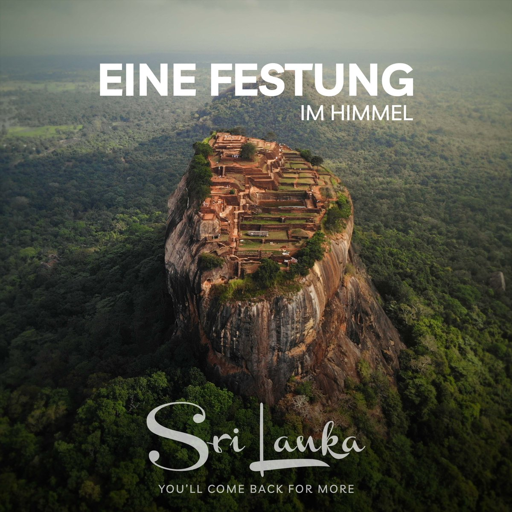

Why Choose Sri Lanka
Despite being a small island, Sri Lanka offers a variety of landscapes, from pristine beaches to lush tea plantations, misty mountains, dense rainforests, and serene lakes.

Solo Travel
Sri Lanka is generally considered safe for solo female travelers. However, like any destination, it’s essential to stay aware of your surroundings and take standard precautions, such as avoiding isolated areas at night.


World's Leading Beach Destination
Sri Lanka has been recognized multiple times at the World Travel Awards, often winning titles like "Asia's Leading Destination" and "World's Leading Beach Destination